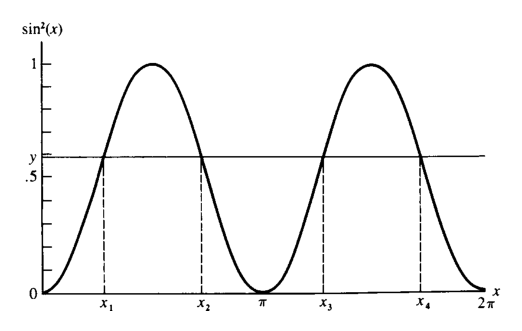
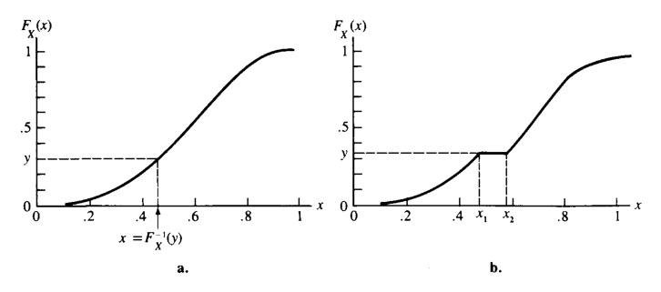
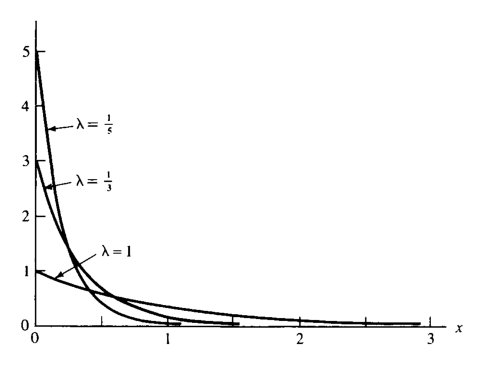
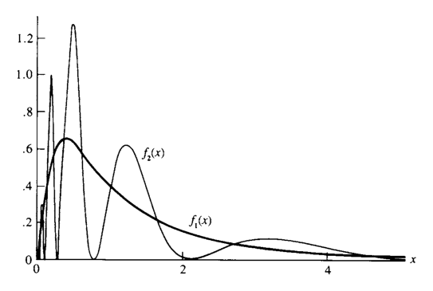
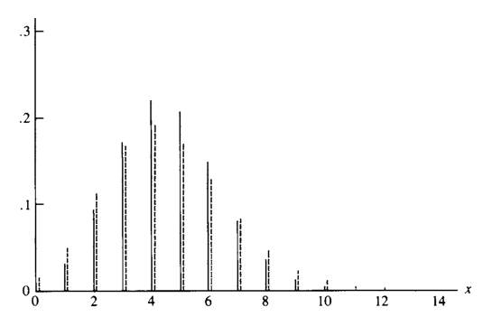

2 변환과 기댓값
“We want something more than mere theory and preaching now, though.”
— Sherlock Holmes, A Study in Scarlet
- 이 장의 핵심 주제는 확률변수의 함수, 기댓값, 모멘트, 적률생성함수, 그리고 적분기호 아래에서의 미분이다.
- 어떤 현상을 확률변수 \(X\)와 그 누적분포함수 \(F_X(x)\)로 모형화할 수 있다면, 실제 분석에서는 \(X\) 자체뿐 아니라 \(X\)의 함수 \(g(X)\)에 관심을 갖는 경우가 많다.
- 예를 들어 다음과 같은 질문이 자연스럽다.
- \(X\)를 변환한 \(Y=g(X)\)의 분포는 무엇인가?
- \(g(X)\)의 평균적 행동, 즉 \(E[g(X)]\)는 얼마인가?
- 분포의 퍼짐 정도는 어떻게 측정하는가?
- 모멘트나 적률생성함수로 분포를 어떻게 특징지을 수 있는가?
- 이 장에서는 이러한 질문에 답하기 위한 기본 도구를 다룬다.
2.1 확률변수의 함수의 분포
- \(X\)가 누적분포함수 \(F_X(x)\)를 갖는 확률변수라고 하자.
- \(X\)의 함수 \(g(X)\)도 확률변수이다.
- 새 확률변수를 다음과 같이 둔다.
\[ Y = g(X) \]
- \(Y\)의 확률적 행동은 \(X\)의 확률적 행동과 함수 \(g\)에 의해 결정된다.
- 임의의 집합 \(A\)에 대해 다음이 성립한다.
\[ P(Y \in A)=P(g(X)\in A) \]
- 즉, \(Y\)의 분포는 \(F_X\)와 \(g\)에 의해 결정된다.
2.1.1 변환과 역상
- \(y=g(x)\)라고 쓰면, \(g\)는 \(X\)의 표본공간 \(\mathcal X\)에서 \(Y\)의 표본공간 \(\mathcal Y\)로 가는 사상이다.
\[ g(x): \mathcal X \rightarrow \mathcal Y \]
- \(g\)에 대응하는 역상 사상 \(g^{-1}\)은 \(\mathcal Y\)의 부분집합을 \(\mathcal X\)의 부분집합으로 보낸다.
- 임의의 \(A \subset \mathcal Y\)에 대해
\[ g^{-1}(A)=\{x\in \mathcal X: g(x)\in A\} \tag{2.1.1} \]
- 여기서 중요한 점은 다음과 같다.
- \(g^{-1}\)는 일반적인 의미의 역함수와 다를 수 있다.
- \(g^{-1}(A)\)는 하나의 점이 아니라 집합일 수 있다.
- 특히 \(A=\{y\}\)이면
\[ g^{-1}(\{y\})=\{x\in \mathcal X:g(x)=y\} \]
- 관례적으로 \(g^{-1}(\{y\})\) 대신 \(g^{-1}(y)\)라고 쓰기도 한다.
- 그러나 \(g^{-1}(y)\)가 반드시 하나의 값이라는 뜻은 아니다.
- 만약 \(g(x)=y\)를 만족하는 \(x\)가 여러 개이면 \(g^{-1}(y)\)는 여러 점으로 이루어진 집합이다.
2.1.2 \(Y=g(X)\)의 분포 정의
- \(Y=g(X)\)라고 정의하면, 임의의 \(A\subset\mathcal Y\)에 대해
\[ \begin{aligned} P(Y\in A) &=P(g(X)\in A)\\ &=P(\{x\in\mathcal X:g(x)\in A\})\\ &=P\{X\in g^{-1}(A)\}. \end{aligned} \tag{2.1.2} \]
- 이 식은 \(Y\)의 확률분포를 정의한다.
- 이 분포는 콜모고로프 확률공리를 만족한다.
2.1.3 이산형 확률변수의 변환
- \(X\)가 이산형이면 \(\mathcal X\)는 가산집합이다.
- \(Y=g(X)\)의 표본공간은
\[ \mathcal Y=\{y:y=g(x),\;x\in\mathcal X\} \]
이다.
- 따라서 \(Y\) 역시 이산형 확률변수이다.
- \(Y\)의 확률질량함수는 다음과 같다.
\[ f_Y(y) = P(Y=y) = \sum_{x\in g^{-1}(y)}P(X=x) = \sum_{x\in g^{-1}(y)}f_X(x), \qquad y\in\mathcal Y. \]
- \(y\notin\mathcal Y\)이면
\[ f_Y(y)=0 \]
이다.
- 이산형 변환 문제의 핵심은 다음 두 단계이다.
- 각 \(y\)에 대해 \(g^{-1}(y)\)를 찾는다.
- 그 역상에 속하는 모든 \(x\)의 확률을 더한다.
2.1.4 예제: 이항분포의 변환
- \(X\)가 다음의 이항분포를 따른다고 하자.
\[ f_X(x)=P(X=x) = \binom{n}{x}p^x(1-p)^{n-x}, \qquad x=0,1,\ldots,n. \tag{2.1.3} \]
- 여기서
- \(n\)은 양의 정수,
- \(0\le p\le 1\),
- \(n\)과 \(p\)는 분포를 결정하는 모수(parameter)이다.
- 새 확률변수를 다음과 같이 정의한다.
\[ Y=g(X)=n-X \]
- 이때
\[ \mathcal X=\{0,1,\ldots,n\},\qquad \mathcal Y=\{0,1,\ldots,n\}. \]
- \(y\in\mathcal Y\)에 대해
\[ n-x=y \quad\Longleftrightarrow\quad x=n-y \]
이므로 \(g^{-1}(y)=n-y\)이다.
- 따라서
\[ \begin{aligned} f_Y(y) &=\sum_{x\in g^{-1}(y)}f_X(x)\\ &=f_X(n-y)\\ &=\binom{n}{n-y}p^{\,n-y}(1-p)^y\\ &=\binom{n}{y}(1-p)^y p^{\,n-y}. \end{aligned} \]
- 결론:
- \(Y=n-X\)도 이항분포를 따른다.
- 단, 성공확률은 \(p\)가 아니라 \(1-p\)가 된다.
- 즉, \(X\sim Bin(n,p)\)이면
\[ n-X \sim Bin(n,1-p). \]
2.1.5 연속형 확률변수의 변환: cdf 접근
- \(X\)와 \(Y\)가 연속형 확률변수인 경우, \(Y=g(X)\)의 분포를 구하기 위해 먼저 cdf를 계산할 수 있다.
- \(Y\)의 cdf는
\[ \begin{aligned} F_Y(y) &=P(Y\le y)\\ &=P(g(X)\le y)\\ &=P(\{x\in\mathcal X:g(x)\le y\})\\ &=\int_{\{x\in\mathcal X:g(x)\le y\}} f_X(x)\,dx. \end{aligned} \tag{2.1.4} \]
- 이 방법은 원칙적으로 항상 사용할 수 있다.
- 그러나 실제 계산에서는 집합
\[ \{x\in\mathcal X:g(x)\le y\} \]
을 정확히 찾고 그 영역에서 적분해야 하므로 계산이 복잡해질 수 있다.
2.1.6 예제: 균등분포의 사인 제곱 변환
- \(X\)가 \((0,2\pi)\)에서 균등분포를 따른다고 하자.
\[ f_X(x)= \begin{cases} \dfrac{1}{2\pi}, & 0<x<2\pi,\\ 0, & \text{otherwise}. \end{cases} \]
- 변환을 다음과 같이 둔다.
\[ Y=\sin^2(X) \]
- 이 변환은 단조함수가 아니므로 단순한 역함수를 사용할 수 없다.
- 아래 그림은 \(y=\sin^2(x)\)의 그래프와 \(Y\le y\)가 되는 구간들을 보여준다.

- 그림에서 \(Y\le y\)는 다음 영역들의 합으로 표현된다.
\[ P(Y\le y) = P(X\le x_1)+P(x_2\le X\le x_3)+P(X\ge x_4). \tag{2.1.5} \]
- \(\sin^2(x)\)의 대칭성과 \(X\)의 균등분포를 이용하면
\[ P(X\le x_1)=P(X\ge x_4) \]
이고,
\[ P(x_2\le X\le x_3)=2P(x_2\le X\le \pi) \]
이다.
- 따라서
\[ P(Y\le y) = 2P(X\le x_1)+2P(x_2\le X\le \pi), \tag{2.1.6} \]
여기서 \(x_1\)과 \(x_2\)는
\[ \sin^2(x)=y, \qquad 0<x<\pi \]
의 두 해이다.
- 이 예제의 교훈:
- \(X\)가 단순한 균등분포이고 \(g(x)=\sin^2(x)\)처럼 익숙한 함수여도,
- \(Y=g(X)\)의 cdf는 단순하지 않을 수 있다.
- 변환함수가 단조가 아니면 역상을 여러 구간으로 나누어 다루어야 한다.
2.1.7 지지집합과 변환 후 표본공간
- 변환을 다룰 때는 확률변수의 표본공간 또는 지지집합을 정확히 추적해야 한다.
- \(X\)의 pdf가 양수인 집합을 다음과 같이 둔다.
\[ \mathcal X=\{x:f_X(x)>0\} \]
- 변환 후 \(Y=g(X)\)의 표본공간은
\[ \mathcal Y=\{y:y=g(x)\text{ for some }x\in\mathcal X\}. \tag{2.1.7} \]
- \(\mathcal X\)는 분포의 지지집합(support set) 또는 지지(support)라고 부른다.
- 이 용어는 pdf뿐 아니라 pmf 또는 일반적인 비음수 함수에도 사용할 수 있다.
2.1.8 단조변환
- 변환 문제에서 가장 다루기 쉬운 경우는 \(g(x)\)가 단조함수인 경우이다.
- \(g\)가 증가함수이면
\[ u>v\Rightarrow g(u)>g(v) \]
이다.
- \(g\)가 감소함수이면
\[ u<v\Rightarrow g(u)>g(v) \]
이다.
- \(g\)가 단조이면 다음이 성립한다.
- \(x\mapsto g(x)\)는 \(\mathcal X\)에서 \(\mathcal Y\)로 일대일 대응을 이룬다.
- 각 \(y\in\mathcal Y\)는 유일한 \(x\in\mathcal X\)에서 온다.
- 따라서 \(g^{-1}(y)\)는 단일값으로 정의된다.
2.1.9 증가함수인 경우
- \(g\)가 증가함수이면
\[ \{x\in\mathcal X:g(x)\le y\} = \{x\in\mathcal X:x\le g^{-1}(y)\}. \tag{2.1.8} \]
- 따라서
\[ F_Y(y) = \int_{-\infty}^{g^{-1}(y)} f_X(x)\,dx = F_X(g^{-1}(y)). \]
2.1.10 감소함수인 경우
- \(g\)가 감소함수이면 부등호 방향이 바뀐다.
\[ \{x\in\mathcal X:g(x)\le y\} = \{x\in\mathcal X:x\ge g^{-1}(y)\}. \tag{2.1.9} \]
- \(X\)가 연속형이면
\[ F_Y(y) = \int_{g^{-1}(y)}^\infty f_X(x)\,dx = 1-F_X(g^{-1}(y)). \]
2.1.11 정리: 단조변환의 cdf
\(X\)의 cdf를 \(F_X(x)\)라 하고 \(Y=g(X)\)라고 하자.
\(\mathcal X\)와 \(\mathcal Y\)는 식 (2.1.7)처럼 정의한다.
\(g\)가 \(\mathcal X\)에서 증가함수이면,
\[ F_Y(y)=F_X(g^{-1}(y)), \qquad y\in\mathcal Y. \]
- \(g\)가 \(\mathcal X\)에서 감소함수이고 \(X\)가 연속형이면,
\[ F_Y(y)=1-F_X(g^{-1}(y)), \qquad y\in\mathcal Y. \]
2.1.12 예제: 균등분포와 지수분포의 관계 I
- \(X\)가 \((0,1)\)에서 균등분포를 따른다고 하자.
\[ f_X(x)= \begin{cases} 1, & 0<x<1,\\ 0, & \text{otherwise}. \end{cases} \]
- 이때
\[ F_X(x)=x,\qquad 0<x<1. \]
- 변환을 다음과 같이 둔다.
\[ Y=g(X)=-\log X. \]
- \(g\)의 도함수는
\[ \frac{d}{dx}g(x) = \frac{d}{dx}(-\log x) = -\frac{1}{x}<0, \qquad 0<x<1. \]
- 따라서 \(g\)는 \((0,1)\)에서 감소함수이다.
- \(x\)가 \(0\)에서 \(1\) 사이를 움직이면 \(-\log x\)는 \(0\)에서 \(\infty\) 사이를 움직인다.
- 즉,
\[ \mathcal Y=(0,\infty). \]
- \(y=-\log x\)이면
\[ x=e^{-y}, \]
따라서
\[ g^{-1}(y)=e^{-y}. \]
- 감소변환 공식에 의해 \(y>0\)에서
\[ \begin{aligned} F_Y(y) &=1-F_X(g^{-1}(y))\\ &=1-F_X(e^{-y})\\ &=1-e^{-y}. \end{aligned} \]
- \(y\le 0\)이면 \(F_Y(y)=0\)이다.
- 결론:
- \(Y=-\log X\)는 cdf \(F_Y(y)=1-e^{-y}\)를 갖는다.
- 이는 평균 모수가 \(1\)인 지수분포의 cdf이다.
2.1.13 정리: 단조변환의 pdf
- \(X\)가 pdf \(f_X(x)\)를 갖고, \(Y=g(X)\)라고 하자.
- \(g\)는 단조함수라고 가정한다.
- \(\mathcal X\)와 \(\mathcal Y\)는 식 (2.1.7)처럼 정의한다.
- \(f_X(x)\)가 \(\mathcal X\)에서 연속이고, \(g^{-1}(y)\)가 \(\mathcal Y\)에서 연속인 도함수를 가지면, \(Y\)의 pdf는 다음과 같다.
\[ f_Y(y)= \begin{cases} f_X(g^{-1}(y)) \left| \dfrac{d}{dy}g^{-1}(y) \right|, & y\in\mathcal Y,\\ 0, & \text{otherwise}. \end{cases} \tag{2.1.10} \]
- 이 공식에서 절댓값 항
\[ \left| \dfrac{d}{dy}g^{-1}(y) \right| \]
은 변환에 의해 길이 또는 밀도가 얼마나 늘어나거나 줄어드는지를 보정한다. - 이 항은 흔히 야코비안(Jacobian) 역할을 한다고 이해할 수 있다.
2.1.14 예제: 역감마형 pdf
- \(X\)의 pdf가 다음과 같은 감마 pdf의 특수한 형태라고 하자.
\[ f_X(x) = \frac{1}{(n-1)!\beta^n} x^{n-1}e^{-x/\beta}, \qquad 0<x<\infty, \]
여기서 \(\beta>0\), \(n\)은 양의 정수이다.
- 변환을 다음과 같이 둔다.
\[ Y=g(X)=\frac{1}{X}. \]
- 여기서
\[ \mathcal X=(0,\infty), \qquad \mathcal Y=(0,\infty). \]
- \(y=g(x)=1/x\)이면
\[ g^{-1}(y)=\frac{1}{y}. \]
- 그리고
\[ \frac{d}{dy}g^{-1}(y) = -\frac{1}{y^2}. \]
- 따라서
\[ \left| \frac{d}{dy}g^{-1}(y) \right| = \frac{1}{y^2}. \]
- 정리를 적용하면 \(y>0\)에서
\[ \begin{aligned} f_Y(y) &= f_X\left(\frac{1}{y}\right)\frac{1}{y^2}\\ &= \frac{1}{(n-1)!\beta^n} \left(\frac{1}{y}\right)^{n-1} e^{-1/(\beta y)} \frac{1}{y^2}\\ &= \frac{1}{(n-1)!\beta^n} \left(\frac{1}{y}\right)^{n+1} e^{-1/(\beta y)}. \end{aligned} \]
- 이는 역감마(inverted gamma) pdf의 한 특수한 경우이다.
2.1.15 단조가 아닌 변환
- 실제 문제에서 \(g\)가 전체 지지집합에서 증가 또는 감소하지 않는 경우가 많다.
- 이때는 \(g\)가 단조가 되는 여러 구간으로 \(\mathcal X\)를 나누어야 한다.
- 각 구간에서 단조변환 공식을 적용한 뒤 결과를 더한다.
2.1.16 예제: 제곱변환
- \(X\)가 연속형 확률변수라고 하자.
- 변환을 다음과 같이 둔다.
\[ Y=X^2. \]
- \(y>0\)에 대해
\[ \begin{aligned} F_Y(y) &=P(Y\le y)\\ &=P(X^2\le y)\\ &=P(-\sqrt y\le X\le \sqrt y). \end{aligned} \]
- \(X\)가 연속형이므로 한 점의 확률은 0이다.
- 따라서 왼쪽 끝점의 등호를 제거해도 된다.
\[ F_Y(y) = P(-\sqrt y<X\le \sqrt y). \]
- 그러므로
\[ F_Y(y) = F_X(\sqrt y)-F_X(-\sqrt y). \]
- 이를 미분하면
\[ \begin{aligned} f_Y(y) &= \frac{d}{dy} \left[ F_X(\sqrt y)-F_X(-\sqrt y) \right]\\ &= \frac{1}{2\sqrt y}f_X(\sqrt y) + \frac{1}{2\sqrt y}f_X(-\sqrt y). \end{aligned} \]
- 따라서
\[ f_Y(y) = \frac{1}{2\sqrt y} \left[ f_X(\sqrt y)+f_X(-\sqrt y) \right], \qquad y>0. \tag{2.1.11} \]
- 이 식은 \(x^2\)가 두 구간에서 단조라는 사실을 반영한다.
- \((-\infty,0)\)에서는 감소
- \((0,\infty)\)에서는 증가
2.1.17 정리: 구간별 단조변환
- \(X\)가 pdf \(f_X(x)\)를 갖고, \(Y=g(X)\)라고 하자.
- \(\mathcal X\)를 식 (2.1.7)처럼 정의한다.
- \(\mathcal X\)의 분할 \(A_0,A_1,\ldots,A_k\)가 존재한다고 하자.
- 조건은 다음과 같다.
- \(P(X\in A_0)=0\)이다.
- \(f_X(x)\)는 각 \(A_i\)에서 연속이다.
- 각 \(A_i\)에서 함수 \(g_i(x)\)가 존재하여 \(g(x)=g_i(x)\)이다.
- 각 \(g_i(x)\)는 \(A_i\)에서 단조이다.
- 각 \(g_i\)가 만드는 \(\mathcal Y\)가 모든 \(i=1,\ldots,k\)에 대해 동일하다.
- 각 \(g_i^{-1}(y)\)는 \(\mathcal Y\)에서 연속인 도함수를 갖는다.
- 그러면 \(Y\)의 pdf는 다음과 같다.
\[ f_Y(y)= \begin{cases} \displaystyle \sum_{i=1}^k f_X(g_i^{-1}(y)) \left| \frac{d}{dy}g_i^{-1}(y) \right|, & y\in\mathcal Y,\\[10pt] 0, & \text{otherwise}. \end{cases} \]
- 핵심은 다음과 같다.
- \(\mathcal X\)를 \(g\)가 단조가 되는 부분집합들로 나눈다.
- 각 조각에서 단조변환 공식을 쓴다.
- 조각별 결과를 더한다.
- 확률이 0인 예외집합 \(A_0\)는 무시할 수 있다.
2.1.18 예제: 표준정규분포와 카이제곱분포의 관계
- \(X\)가 표준정규분포를 따른다고 하자.
\[ f_X(x) = \frac{1}{\sqrt{2\pi}}e^{-x^2/2}, \qquad -\infty<x<\infty. \]
- 변환을 다음과 같이 둔다.
\[ Y=X^2. \]
- \(g(x)=x^2\)는 다음 두 구간에서 단조이다.
- \((-\infty,0)\)
- \((0,\infty)\)
- 이때
\[ \mathcal Y=(0,\infty). \]
- 정리를 적용하기 위해 다음과 같이 둔다.
\[ A_0=\{0\}, \]
\[ A_1=(-\infty,0), \qquad g_1(x)=x^2, \qquad g_1^{-1}(y)=-\sqrt y, \]
\[ A_2=(0,\infty), \qquad g_2(x)=x^2, \qquad g_2^{-1}(y)=\sqrt y. \]
- 따라서 \(Y\)의 pdf는 \(y>0\)에서
\[ \begin{aligned} f_Y(y) &= \frac{1}{\sqrt{2\pi}} e^{-(-\sqrt y)^2/2} \left| -\frac{1}{2\sqrt y} \right| + \frac{1}{\sqrt{2\pi}} e^{-(\sqrt y)^2/2} \left| \frac{1}{2\sqrt y} \right|\\ &= \frac{1}{\sqrt{2\pi}} \frac{1}{\sqrt y} e^{-y/2}. \end{aligned} \]
- 이 pdf는 자유도 1인 카이제곱분포의 pdf이다.
- 즉,
\[ X\sim N(0,1) \quad\Longrightarrow\quad X^2\sim \chi^2_1. \]
2.1.19 확률적분변환
- 이제 매우 중요하고 자주 쓰이는 변환을 다룬다.
2.1.20 정리: 확률적분변환
- \(X\)가 연속 cdf \(F_X(x)\)를 갖는다고 하자.
- 새 확률변수를 다음과 같이 정의한다.
\[ Y=F_X(X). \]
- 그러면 \(Y\)는 \((0,1)\)에서 균등분포를 따른다.
- 즉,
\[ P(Y\le y)=y, \qquad 0<y<1. \]
2.1.21 cdf의 역함수 문제
- \(F_X\)가 엄격히 증가하면 역함수는 다음과 같이 잘 정의된다.
\[ F_X^{-1}(y)=x \quad\Longleftrightarrow\quad F_X(x)=y. \tag{2.1.12} \]
- 그러나 \(F_X\)가 어떤 구간에서 상수이면, 위 정의만으로는 역함수가 잘 정의되지 않는다.
- 예를 들어 \(F_X(x)=y\)를 만족하는 \(x\)가 여러 개일 수 있다.
- 이를 피하기 위해 다음과 같이 일반화된 역함수를 정의한다.
\[ F_X^{-1}(y) = \inf\{x:F_X(x)\ge y\}, \qquad 0<y<1. \tag{2.1.13} \]
- 이 정의는 다음 장점을 갖는다.
- \(F_X\)가 엄격히 증가할 때는 일반 역함수와 일치한다.
- \(F_X\)가 평평한 구간을 가져도 단일값을 갖는다.
- 확률적분변환과 난수생성에서 중요하게 사용된다.

2.1.22 정리의 증명 개요
- \(Y=F_X(X)\)라 하자.
- \(0<y<1\)에서
\[ \begin{aligned} P(Y\le y) &=P(F_X(X)\le y)\\ &=P(F_X^{-1}(F_X(X))\le F_X^{-1}(y))\\ &=P(X\le F_X^{-1}(y))\\ &=F_X(F_X^{-1}(y))\\ &=y. \end{aligned} \]
- 끝점에서는
- \(y\le 0\)이면 \(P(Y\le y)=0\),
- \(y\ge 1\)이면 \(P(Y\le y)=1\)이다.
- 따라서 \(Y\)는 \((0,1)\)에서 균등분포를 따른다.
2.1.23 확률적분변환의 해석과 활용
- \(F_X\)가 엄격히 증가하면
\[ F_X^{-1}(F_X(x))=x \]
가 성립한다.
- \(F_X\)가 평평한 구간을 가지면 이 등식이 점별로는 항상 성립하지 않을 수 있다.
- 그러나 평평한 구간은 확률이 0인 영역을 의미하므로 확률 계산에는 문제가 없다.
- 확률적분변환은 난수 생성에 활용된다.
- \(U\sim Uniform(0,1)\)을 생성한다.
- 방정식 \(F_X(x)=u\)를 푼다.
- 그러면 얻어진 \(x=F_X^{-1}(u)\)는 cdf \(F_X\)를 갖는 분포에서 나온 관측값이 된다.
- 이 방법은 일반적으로 적용 가능하다는 장점이 있다.
2.2 기댓값
- 기댓값(expected value) 또는 평균(mean)은 확률변수의 평균적 값을 나타낸다.
- 단순한 산술평균이 아니라, 각 값에 그 값이 나타날 확률을 가중치로 주어 계산한 평균이다.
- 기댓값은 분포의 중심을 나타내는 대표값으로 해석할 수 있다.
2.2.1 정의: 기댓값
- 확률변수 \(g(X)\)의 기댓값 또는 평균을 \(E[g(X)]\)라고 쓴다.
- \(X\)가 연속형이면
\[ E[g(X)] = \int_{-\infty}^{\infty} g(x)f_X(x)\,dx \]
이다.
- \(X\)가 이산형이면
\[ E[g(X)] = \sum_{x\in\mathcal X}g(x)f_X(x) = \sum_{x\in\mathcal X}g(x)P(X=x) \]
이다.
- 단, 적분 또는 합이 존재해야 한다.
- 만약
\[ E|g(X)|=\infty \]
이면 \(E[g(X)]\)는 존재하지 않는다고 한다.
2.2.2 예제: 지수분포의 평균
- \(X\)가 exponential\((\lambda)\) 분포를 따른다고 하자.
- pdf는
\[ f_X(x)=\frac{1}{\lambda}e^{-x/\lambda}, \qquad 0\le x<\infty,\quad \lambda>0. \]
- 평균은
\[ \begin{aligned} EX &= \int_0^\infty x\frac{1}{\lambda}e^{-x/\lambda}\,dx\\ &= -xe^{-x/\lambda}\Big|_0^\infty + \int_0^\infty e^{-x/\lambda}\,dx\\ &= \int_0^\infty e^{-x/\lambda}\,dx\\ &=\lambda. \end{aligned} \]
- 결론:
\[ X\sim Exponential(\lambda) \quad\Longrightarrow\quad EX=\lambda. \]
2.2.3 예제: 이항분포의 평균
- \(X\sim Bin(n,p)\)라고 하자.
\[ P(X=x)=\binom{n}{x}p^x(1-p)^{n-x}, \qquad x=0,1,\ldots,n. \]
- 평균은
\[ EX = \sum_{x=0}^{n} x\binom{n}{x}p^x(1-p)^{n-x}. \]
- \(x=0\) 항은 0이므로
\[ EX = \sum_{x=1}^{n} x\binom{n}{x}p^x(1-p)^{n-x}. \]
- 다음 항등식을 이용한다.
\[ x\binom{n}{x} = n\binom{n-1}{x-1}. \]
- 그러면
\[ \begin{aligned} EX &= \sum_{x=1}^{n} n\binom{n-1}{x-1}p^x(1-p)^{n-x}\\ &= \sum_{y=0}^{n-1} n\binom{n-1}{y}p^{y+1}(1-p)^{n-1-y}\\ &= np \sum_{y=0}^{n-1} \binom{n-1}{y}p^y(1-p)^{n-1-y}\\ &=np. \end{aligned} \]
- 마지막 합은 \(Bin(n-1,p)\) pmf 전체의 합이므로 1이다.
- 결론:
\[ X\sim Bin(n,p) \quad\Longrightarrow\quad EX=np. \]
2.2.4 예제: 코시분포의 평균은 존재하지 않는다
- 코시분포의 pdf는 다음과 같다.
\[ f_X(x)= \frac{1}{\pi} \frac{1}{1+x^2}, \qquad -\infty<x<\infty. \]
- 이 함수는 pdf이다.
\[ \int_{-\infty}^{\infty}f_X(x)\,dx=1 \]
- 그러나 평균이 존재하려면 \(E|X|<\infty\)이어야 한다.
- 실제로
\[ E|X| = \int_{-\infty}^{\infty} \frac{|x|}{\pi(1+x^2)}\,dx = \frac{2}{\pi}\int_0^\infty\frac{x}{1+x^2}\,dx. \]
- 임의의 \(M>0\)에 대해
\[ \int_0^M\frac{x}{1+x^2}\,dx = \frac{\log(1+M^2)}{2}. \]
- 따라서
\[ E|X| = \lim_{M\to\infty} \frac{1}{\pi}\log(1+M^2) = \infty. \]
- 결론:
- 코시분포는 평균이 존재하지 않는다.
- 대칭적 모양을 가진다고 해서 평균이 항상 존재하는 것은 아니다.
2.2.5 기댓값의 선형성
- 기댓값은 선형 연산이다.
- 상수 \(a,b\)에 대해
\[ E(aX+b)=aEX+b. \tag{2.2.1} \]
- 예를 들어 \(X\sim Bin(n,p)\)이면 \(EX=np\)이므로
\[ E(X-np)=EX-np=np-np=0. \]
2.2.6 정리: 기댓값의 기본 성질
- \(X\)를 확률변수라 하고 \(a,b,c\)를 상수라 하자.
- \(g_1(x),g_2(x)\)의 기댓값이 존재한다고 하자.
- 선형성:
\[ E[ag_1(X)+bg_2(X)+c] = aE[g_1(X)]+bE[g_2(X)]+c. \]
- 비음수성:
\[ g_1(x)\ge 0\;\text{for all }x \quad\Longrightarrow\quad E[g_1(X)]\ge 0. \]
- 단조성:
\[ g_1(x)\ge g_2(x)\;\text{for all }x \quad\Longrightarrow\quad E[g_1(X)]\ge E[g_2(X)]. \]
- 범위 보존:
\[ a\le g_1(x)\le b\;\text{for all }x \quad\Longrightarrow\quad a\le E[g_1(X)]\le b. \]
2.2.7 예제: 평균은 제곱거리의 최적 예측값이다
- 확률변수 \(X\)와 상수 \(b\) 사이의 거리를 다음으로 측정한다고 하자.
\[ (X-b)^2 \]
- 평균적으로 이 거리를 최소화하는 \(b\)를 찾고자 한다.
- 즉,
\[ E(X-b)^2 \]
를 최소화하는 \(b\)를 찾는다.
- 다음과 같이 \(EX\)를 더하고 뺀다.
\[ X-b=(X-EX)+(EX-b). \]
- 따라서
\[ \begin{aligned} E(X-b)^2 &= E[(X-EX)+(EX-b)]^2\\ &= E(X-EX)^2 + (EX-b)^2 + 2E[(X-EX)(EX-b)]. \end{aligned} \]
- 여기서 \((EX-b)\)는 상수이므로
\[ E[(X-EX)(EX-b)] = (EX-b)E(X-EX)=0. \]
- 따라서
\[ E(X-b)^2 = E(X-EX)^2+(EX-b)^2. \tag{2.2.2} \]
- 오른쪽 첫 번째 항은 \(b\)와 무관하다.
- 두 번째 항은 \(b=EX\)일 때 0이 된다.
- 따라서
\[ \min_b E(X-b)^2 = E(X-EX)^2. \tag{2.2.3} \]
- 결론:
- 평균 \(EX\)는 제곱오차 기준에서 \(X\)의 최적 상수 예측값이다.
2.2.8 \(E[g(X)]\) 계산의 두 가지 방법
- 비선형 함수 \(g(X)\)의 기댓값을 구할 때 두 가지 방법이 있다.
2.2.8.1 방법 1: 직접 계산
\[ E[g(X)] = \int_{-\infty}^{\infty}g(x)f_X(x)\,dx. \tag{2.2.4} \]
2.2.8.2 방법 2: \(Y=g(X)\)의 분포를 먼저 구한 뒤 계산
- \(Y=g(X)\)의 pdf를 \(f_Y(y)\)라고 하면
\[ E[g(X)] = EY = \int_{-\infty}^{\infty}y f_Y(y)\,dy. \tag{2.2.5} \]
- 두 방법은 같은 값을 준다.
- 실전에서는 계산이 더 쉬운 방법을 선택한다.
2.2.9 예제: 균등분포와 지수분포의 관계 II
- \(X\sim Uniform(0,1)\)라 하자.
\[ f_X(x)= \begin{cases} 1, & 0\le x\le 1,\\ 0, & \text{otherwise}. \end{cases} \]
- \(g(X)=-\log X\)라고 하자.
- 직접 계산하면
\[ \begin{aligned} E[-\log X] &= \int_0^1 -\log x\,dx\\ &= x-x\log x\Big|_0^1\\ &=1. \end{aligned} \]
- 한편 예제에서 \(Y=-\log X\)는 cdf
\[ F_Y(y)=1-e^{-y},\qquad y>0 \]
를 가진다.
- 따라서 pdf는
\[ f_Y(y)=e^{-y},\qquad y>0 \]
이다.
- 이는 \(\lambda=1\)인 지수분포이므로
\[ EY=1. \]
- 두 방법이 같은 결과를 준다.
2.3 모멘트와 적률생성함수
- 분포의 여러 특성을 요약하는 중요한 기댓값들이 있다.
- 이를 모멘트(moment)라고 한다.
2.3.1 정의: 모멘트와 중심모멘트
- \(X\)의 \(n\)차 모멘트는
\[ \mu_n' = E[X^n] \]
이다.
- \(X\)의 \(n\)차 중심모멘트는
\[ \mu_n=E[(X-\mu)^n], \]
여기서
\[ \mu=\mu_1'=EX \]
이다.
2.3.2 정의: 분산
- 확률변수 \(X\)의 분산은 두 번째 중심모멘트이다.
\[ Var(X)=E[(X-EX)^2]. \]
- 분산의 양의 제곱근을 표준편차라고 한다.
\[ SD(X)=\sqrt{Var(X)}. \]
- 분산의 해석:
- \(X\)가 평균 주변에서 얼마나 퍼져 있는지 측정한다.
- 분산이 작으면 \(X\)는 평균 근처에 있을 가능성이 높다.
- 분산이 크면 \(X\)의 값이 평균 주변에서 많이 흩어진다.
- 표준편차는 원래 변수 \(X\)와 같은 단위를 가지므로 해석이 더 직관적이다.
2.3.3 예제: 지수분포의 분산
- \(X\)가 exponential\((\lambda)\) 분포를 따른다고 하자.
- 예제 2.2.2에서
\[ EX=\lambda \]
임을 보았다.
- 분산은
\[ \begin{aligned} Var(X) &= E[(X-\lambda)^2]\\ &= \int_0^\infty (x-\lambda)^2 \frac{1}{\lambda}e^{-x/\lambda}\,dx\\ &= \int_0^\infty (x^2-2x\lambda+\lambda^2) \frac{1}{\lambda}e^{-x/\lambda}\,dx. \end{aligned} \]
- 각 항을 부분적분으로 계산하면
\[ Var(X)=\lambda^2. \]
- 지수분포의 분산은 모수 \(\lambda\)와 직접적으로 관련된다.
- 아래 그림은 \(\lambda=1,1/3,1/5\)일 때의 지수분포 밀도를 보여준다.
- \(\lambda\)가 작을수록 분포는 평균 주변에 더 집중된다.

2.3.4 정리: 선형변환의 분산
- \(X\)가 유한한 분산을 갖는 확률변수이고 \(a,b\)가 상수이면
\[ Var(aX+b)=a^2Var(X). \]
- 증명:
\[ \begin{aligned} Var(aX+b) &= E[(aX+b)-E(aX+b)]^2\\ &= E[aX-aEX]^2\\ &= a^2E(X-EX)^2\\ &= a^2Var(X). \end{aligned} \]
- 중요한 해석:
- 상수 \(b\)를 더하는 것은 분산을 바꾸지 않는다.
- \(a\)를 곱하면 분산은 \(a^2\)배가 된다.
2.3.5 분산의 계산 공식
- 분산은 다음의 등가 공식으로도 계산할 수 있다.
\[ Var(X)=E[X^2]-(EX)^2. \tag{2.3.1} \]
- 증명:
\[ \begin{aligned} Var(X) &=E[(X-EX)^2]\\ &=E[X^2-2XEX+(EX)^2]\\ &=EX^2-2(EX)^2+(EX)^2\\ &=EX^2-(EX)^2. \end{aligned} \]
2.3.6 예제: 이항분포의 분산
- \(X\sim Bin(n,p)\)라고 하자.
\[ P(X=x)=\binom{n}{x}p^x(1-p)^{n-x}, \qquad x=0,1,\ldots,n. \]
- 이미
\[ EX=np \]
임을 알고 있다.
- 분산을 구하기 위해 먼저 \(EX^2\)를 계산한다.
\[ EX^2 = \sum_{x=0}^{n} x^2\binom{n}{x}p^x(1-p)^{n-x}. \tag{2.3.2} \]
- 다음 항등식을 사용한다.
\[ x^2\binom{n}{x} = xn\binom{n-1}{x-1}. \tag{2.3.3} \]
- \(x=0\) 항은 0이므로
\[ \begin{aligned} EX^2 &= n\sum_{x=1}^{n} x\binom{n-1}{x-1}p^x(1-p)^{n-x}\\ &= n\sum_{y=0}^{n-1} (y+1)\binom{n-1}{y}p^{y+1}(1-p)^{n-1-y}\\ &= np\sum_{y=0}^{n-1} y\binom{n-1}{y}p^y(1-p)^{n-1-y}\\ &\quad+ np\sum_{y=0}^{n-1} \binom{n-1}{y}p^y(1-p)^{n-1-y}. \end{aligned} \]
- 첫 번째 합은 \(Bin(n-1,p)\)의 평균이므로 \((n-1)p\)이다.
- 두 번째 합은 \(Bin(n-1,p)\) pmf의 전체 합이므로 1이다.
- 따라서
\[ EX^2=n(n-1)p^2+np. \tag{2.3.4} \]
- 분산 공식에 의해
\[ \begin{aligned} Var(X) &= EX^2-(EX)^2\\ &= n(n-1)p^2+np-(np)^2\\ &= np(1-p). \end{aligned} \]
- 결론:
\[ X\sim Bin(n,p) \quad\Longrightarrow\quad Var(X)=np(1-p). \]
2.3.7 적률생성함수
- 적률생성함수(moment generating function, mgf)는 분포와 관련된 중요한 함수이다.
- 이름처럼 모멘트를 생성할 수 있다.
- 그러나 실제로는 모멘트 계산보다 분포를 특징짓는 도구로 더 중요하다.
2.3.8 정의: 적률생성함수
- 확률변수 \(X\)의 적률생성함수는 다음과 같이 정의된다.
\[ M_X(t)=E[e^{tX}]. \]
- 단, 이 기댓값은 \(0\)의 어떤 근방에서 존재해야 한다.
- 즉, 어떤 \(h>0\)가 존재하여
\[ -h<t<h \]
인 모든 \(t\)에 대해 \(E[e^{tX}]\)가 존재해야 한다.
- 연속형이면
\[ M_X(t) = \int_{-\infty}^{\infty}e^{tx}f_X(x)\,dx. \]
- 이산형이면
\[ M_X(t) = \sum_x e^{tx}P(X=x). \]
2.3.9 정리: mgf와 모멘트
- \(X\)가 mgf \(M_X(t)\)를 가지면
\[ EX^n=M_X^{(n)}(0), \]
여기서
\[ M_X^{(n)}(0) = \left. \frac{d^n}{dt^n}M_X(t) \right|_{t=0}. \]
즉, \(n\)차 모멘트는 mgf를 \(n\)번 미분한 뒤 \(t=0\)을 대입하여 얻는다.
증명 아이디어:
- 적분기호 아래에서 미분할 수 있다고 가정하면
\[ \frac{d}{dt}M_X(t) = \frac{d}{dt} \int_{-\infty}^{\infty}e^{tx}f_X(x)\,dx = \int_{-\infty}^{\infty}xe^{tx}f_X(x)\,dx = E[Xe^{tX}]. \]
- \(t=0\)을 대입하면
\[ M_X'(0)=EX. \]
- 같은 방식으로 반복하면
\[ M_X^{(n)}(0)=EX^n. \]
2.3.10 예제: 감마분포의 mgf
- 감마분포의 pdf는 다음과 같다.
\[ f(x)= \frac{1}{\Gamma(\alpha)\beta^\alpha} x^{\alpha-1}e^{-x/\beta}, \qquad 0<x<\infty, \quad \alpha>0,\;\beta>0. \]
- mgf는
\[ \begin{aligned} M_X(t) &= \frac{1}{\Gamma(\alpha)\beta^\alpha} \int_0^\infty e^{tx}x^{\alpha-1}e^{-x/\beta}\,dx\\ &= \frac{1}{\Gamma(\alpha)\beta^\alpha} \int_0^\infty x^{\alpha-1}e^{-(1/\beta-t)x}\,dx\\ &= \frac{1}{\Gamma(\alpha)\beta^\alpha} \int_0^\infty x^{\alpha-1}e^{-x/(\beta/(1-\beta t))}\,dx. \end{aligned} \tag{2.3.5} \]
- 다음 감마 적분 공식을 사용한다.
\[ \int_0^\infty x^{a-1}e^{-x/b}\,dx = \Gamma(a)b^a. \tag{2.3.6} \]
- 그러면
\[ M_X(t) = \frac{1}{\Gamma(\alpha)\beta^\alpha} \Gamma(\alpha) \left(\frac{\beta}{1-\beta t}\right)^\alpha = \left(\frac{1}{1-\beta t}\right)^\alpha. \]
- 단, 존재 조건은
\[ t<\frac{1}{\beta} \]
이다.
- 평균은 mgf를 미분하여 얻는다.
\[ EX = \left. \frac{d}{dt}M_X(t) \right|_{t=0} = \left. \frac{\alpha\beta}{(1-\beta t)^{\alpha+1}} \right|_{t=0} = \alpha\beta. \]
2.3.11 예제: 이항분포의 mgf
- \(X\sim Bin(n,p)\)이면
\[ P(X=x)=\binom{n}{x}p^x(1-p)^{n-x}. \]
- mgf는
\[ \begin{aligned} M_X(t) &= \sum_{x=0}^{n} e^{tx} \binom{n}{x}p^x(1-p)^{n-x}\\ &= \sum_{x=0}^{n} \binom{n}{x}(pe^t)^x(1-p)^{n-x}. \end{aligned} \]
- 이항정리
\[ \sum_{x=0}^{n}\binom{n}{x}u^xv^{n-x} = (u+v)^n \tag{2.3.7} \]
을 적용하면
\[ M_X(t) = [pe^t+(1-p)]^n. \]
2.3.12 모멘트와 분포의 유일성 문제
- mgf가 존재하면 무한히 많은 모멘트를 생성한다.
- 자연스러운 질문:
- 모든 모멘트를 알면 분포를 유일하게 알 수 있는가?
- 답은 항상 그렇지는 않다.
- 서로 다른 분포가 모든 모멘트를 공유할 수 있다.
2.3.13 예제: 같은 모멘트를 갖지만 서로 다른 pdf
- 다음 두 pdf를 생각하자.
\[ f_1(x) = \frac{1}{\sqrt{2\pi}x} e^{-(\log x)^2/2}, \qquad 0\le x<\infty, \]
\[ f_2(x) = f_1(x)[1+\sin(2\pi\log x)], \qquad 0\le x<\infty. \]
- \(f_1\)은 로그정규분포의 특수한 경우이다.
- \(X_1\sim f_1\)이면
\[ EX_1^r=e^{r^2/2}, \qquad r=0,1,\ldots \]
이다.
- \(X_2\sim f_2\)라 하면
\[ \begin{aligned} EX_2^r &= \int_0^\infty x^r f_1(x)[1+\sin(2\pi\log x)]\,dx\\ &= EX_1^r + \int_0^\infty x^r f_1(x)\sin(2\pi\log x)\,dx. \end{aligned} \]
- 마지막 적분은 적절한 변수변환을 하면 홀함수의 적분이 되어 0이 된다.
- 따라서 \(X_1\)과 \(X_2\)는 서로 다른 pdf를 갖지만 모든 모멘트가 같다.
- 아래 그림은 두 pdf가 실제로 다르게 생겼음을 보여준다.

2.3.14 정리: 모멘트와 mgf가 분포를 특징짓는 경우
- \(F_X(x)\)와 \(F_Y(y)\)가 모든 모멘트를 갖는 두 cdf라고 하자.
- \(X\)와 \(Y\)의 지지집합이 유계이면,
\[ F_X(u)=F_Y(u)\text{ for all }u \]
일 필요충분조건은
\[ EX^r=EY^r, \qquad r=0,1,2,\ldots \]
이다.
- mgf가 존재하고, \(0\)의 어떤 근방에서
\[ M_X(t)=M_Y(t) \]
이면,
\[ F_X(u)=F_Y(u)\text{ for all }u. \]
- 요점:
- 모멘트열만으로는 분포가 유일하지 않을 수 있다.
- 그러나 mgf가 \(0\) 근방에서 존재하고 같으면 분포는 유일하게 결정된다.
2.3.15 정리: mgf의 수렴
- 확률변수열 \(X_1,X_2,\ldots\)가 있고 각 \(X_i\)의 mgf를 \(M_{X_i}(t)\)라 하자.
- 어떤 \(0\) 근방에서
\[ \lim_{i\to\infty}M_{X_i}(t)=M_X(t) \]
이고, \(M_X(t)\)가 어떤 확률변수의 mgf라고 하자. - 그러면 \(M_X(t)\)가 결정하는 유일한 cdf \(F_X\)가 존재하며, \(F_X\)의 연속점 \(x\)에서
\[ \lim_{i\to\infty}F_{X_i}(x)=F_X(x) \]
이다.
- 즉, mgf가 mgf로 수렴하면 cdf도 수렴한다.
2.3.16 라플라스 변환과 mgf
- mgf의 정의식
\[ M_X(t) = \int_{-\infty}^{\infty}e^{tx}f_X(x)\,dx \tag{2.3.8} \]
은 라플라스 변환의 형태이다. - 라플라스 변환의 중요한 성질은 유일성이다. - 일정한 범위의 \(t\)에서 같은 라플라스 변환을 가지면 같은 함수 \(f_X\)를 갖는다. - 이것이 mgf가 분포를 특징지을 수 있는 이유이다.
2.3.17 예제: 이항분포의 포아송 근사
- 초급 통계학에서 자주 배우는 근사:
- \(X\sim Bin(n,p)\)이고
- \(Y\sim Poisson(\lambda)\),
- \(\lambda=np\)일 때,
- \(n\)이 크고 \(p\)가 작으면
\[ P(X=x)\approx P(Y=x). \tag{2.3.9} \]
- 포아송분포의 pmf는
\[ P(Y=x)= \frac{e^{-\lambda}\lambda^x}{x!}, \qquad x=0,1,2,\ldots. \]
- 이항분포의 mgf는
\[ M_X(t)=[pe^t+(1-p)]^n. \tag{2.3.10} \]
- 포아송분포의 mgf는
\[ M_Y(t)=e^{\lambda(e^t-1)}. \]
- \(p=\lambda/n\)으로 두면
\[ \begin{aligned} M_X(t) &= \left[ \frac{\lambda}{n}e^t+ \left(1-\frac{\lambda}{n}\right) \right]^n\\ &= \left[ 1+\frac{1}{n}(e^t-1)\lambda \right]^n. \end{aligned} \]
- 다음 극한을 사용한다.
\[ \lim_{n\to\infty} \left(1+\frac{a_n}{n}\right)^n = e^a \quad\text{if }a_n\to a. \]
- 여기서 \(a=(e^t-1)\lambda\)이므로
\[ \lim_{n\to\infty}M_X(t) = e^{\lambda(e^t-1)} = M_Y(t). \]
- 따라서 mgf 수렴 정리에 의해 이항분포는 포아송분포로 근사된다.

2.3.18 정리: 선형변환의 mgf
- 상수 \(a,b\)에 대해 \(aX+b\)의 mgf는
\[ M_{aX+b}(t)=e^{bt}M_X(at). \]
- 증명:
\[ \begin{aligned} M_{aX+b}(t) &=E[e^{(aX+b)t}]\\ &=E[e^{aXt}e^{bt}]\\ &=e^{bt}E[e^{(at)X}]\\ &=e^{bt}M_X(at). \end{aligned} \]
2.4 2.4 적분기호 아래에서의 미분
- 앞 절에서 mgf를 미분하여 모멘트를 구할 때, 적분기호 아래로 미분을 옮겼다.
- 이 조작은 이론통계에서 자주 등장한다.
- 그러나 항상 정당화되는 것은 아니다.
- 이 절의 목적은 다음과 같다.
- 언제 미분과 적분의 순서를 바꿀 수 있는가?
- 언제 미분과 무한합의 순서를 바꿀 수 있는가?
2.4.1 라이프니츠 법칙
- 다음 형태의 적분을 생각하자.
\[ \frac{d}{d\theta} \int_{a(\theta)}^{b(\theta)} f(x,\theta)\,dx. \tag{2.4.1} \]
- 여기서 적분구간의 양 끝점도 \(\theta\)에 의존할 수 있다.
- 이때 사용하는 규칙이 Leibnitz’s Rule이다.
2.4.2 정리: Leibnitz’s Rule
- \(f(x,\theta)\), \(a(\theta)\), \(b(\theta)\)가 \(\theta\)에 대해 미분가능하면
\[ \frac{d}{d\theta} \int_{a(\theta)}^{b(\theta)} f(x,\theta)\,dx = f(b(\theta),\theta)\frac{d}{d\theta}b(\theta) - f(a(\theta),\theta)\frac{d}{d\theta}a(\theta) + \int_{a(\theta)}^{b(\theta)} \frac{\partial}{\partial\theta}f(x,\theta)\,dx. \]
- 특히 \(a(\theta)\)와 \(b(\theta)\)가 상수이면
\[ \frac{d}{d\theta} \int_a^b f(x,\theta)\,dx = \int_a^b \frac{\partial}{\partial\theta}f(x,\theta)\,dx. \]
- 유한구간에서는 보통 문제가 적다.
- 그러나 적분구간이 무한이면 추가 조건이 필요하다.
2.4.3 미분과 적분 순서 교환의 본질
- 미분은 극한이다.
\[ \frac{\partial}{\partial\theta}f(x,\theta) = \lim_{\delta\to0} \frac{f(x,\theta+\delta)-f(x,\theta)}{\delta}. \]
- 따라서 적분기호 아래에서 미분한다는 것은 사실상 다음 두 연산을 바꾸는 것이다.
- 극한
- 적분
- 즉, 다음 두 표현이 같은지 묻는 문제이다.
\[ \int_{-\infty}^{\infty} \lim_{\delta\to0} \left[ \frac{f(x,\theta+\delta)-f(x,\theta)}{\delta} \right]dx \]
와
\[ \lim_{\delta\to0} \int_{-\infty}^{\infty} \left[ \frac{f(x,\theta+\delta)-f(x,\theta)}{\delta} \right]dx. \]
2.4.4 정리: 지배수렴정리의 한 형태
- \(h(x,y)\)가 각 \(x\)에 대해 \(y_0\)에서 연속이라고 하자.
- 어떤 함수 \(g(x)\)가 존재하여 다음을 만족한다고 하자.
- 모든 \(x,y\)에 대해
\[ |h(x,y)|\le g(x) \]
- 그리고
\[ \int_{-\infty}^{\infty}g(x)\,dx<\infty. \]
- 그러면
\[ \lim_{y\to y_0} \int_{-\infty}^{\infty}h(x,y)\,dx = \int_{-\infty}^{\infty} \lim_{y\to y_0}h(x,y)\,dx. \]
- 핵심 조건은 적분가능한 지배함수 \(g(x)\)의 존재이다.
2.4.5 정리: 적분기호 아래에서의 미분 조건
- \(f(x,\theta)\)가 \(\theta=\theta_0\)에서 미분가능하다고 하자.
- 즉,
\[ \lim_{\delta\to0} \frac{f(x,\theta_0+\delta)-f(x,\theta_0)}{\delta} = \left. \frac{\partial}{\partial\theta}f(x,\theta) \right|_{\theta=\theta_0} \]
가 모든 \(x\)에서 존재한다고 하자.
- 어떤 함수 \(g(x,\theta_0)\)와 상수 \(\delta_0>0\)가 존재하여 다음을 만족한다고 하자.
- 모든 \(x\)와 \(|\delta|\le\delta_0\)에 대해
\[ \left| \frac{f(x,\theta_0+\delta)-f(x,\theta_0)}{\delta} \right| \le g(x,\theta_0) \]
- 그리고
\[ \int_{-\infty}^{\infty}g(x,\theta_0)\,dx<\infty. \]
- 그러면
\[ \left. \frac{d}{d\theta} \int_{-\infty}^{\infty} f(x,\theta)\,dx \right|_{\theta=\theta_0} = \int_{-\infty}^{\infty} \left. \frac{\partial}{\partial\theta}f(x,\theta) \right|_{\theta=\theta_0} dx. \tag{2.4.2} \]
2.4.6 더 실용적인 조건
- \(f(x,\theta)\)가 모든 \(\theta\)에서 미분가능한 경우, 평균값정리를 이용해 다음 조건으로 충분하다.
- 어떤 \(g(x,\theta)\)가 존재하여
\[ \left| \left. \frac{\partial}{\partial\theta}f(x,\theta) \right|_{\theta=\theta'} \right| \le g(x,\theta) \quad \text{for all }\theta'\text{ such that }|\theta'-\theta|\le\delta_0 \tag{2.4.4} \]
이고,
\[ \int_{-\infty}^{\infty}g(x,\theta)\,dx<\infty \]
이면
\[ \frac{d}{d\theta} \int_{-\infty}^{\infty} f(x,\theta)\,dx = \int_{-\infty}^{\infty} \frac{\partial}{\partial\theta}f(x,\theta)\,dx. \tag{2.4.3} \]
2.4.7 따름정리
- \(f(x,\theta)\)가 \(\theta\)에 대해 미분가능하고, 식 (2.4.4)를 만족하는 적분가능한 지배함수 \(g(x,\theta)\)가 존재하면 식 (2.4.3)이 성립한다.
2.4.8 예제: 적분과 미분의 교환 I
- \(X\)가 exponential\((\lambda)\) pdf를 갖는다고 하자.
\[ f(x)=\frac{1}{\lambda}e^{-x/\lambda}, \qquad 0<x<\infty. \]
- 다음 미분을 계산하고자 한다.
\[ \frac{d}{d\lambda}EX^n = \frac{d}{d\lambda} \int_0^\infty x^n \left(\frac{1}{\lambda}\right) e^{-x/\lambda}\,dx. \tag{2.4.5} \]
- 미분을 적분 안으로 옮길 수 있다면
\[ \begin{aligned} \frac{d}{d\lambda}EX^n &= \int_0^\infty \frac{\partial}{\partial\lambda} \left[ x^n \left(\frac{1}{\lambda}\right) e^{-x/\lambda} \right]dx\\ &= \int_0^\infty \frac{x^n}{\lambda^2} \left(\frac{x}{\lambda}-1\right) e^{-x/\lambda}\,dx\\ &= \frac{1}{\lambda^2}EX^{n+1} - \frac{1}{\lambda}EX^n. \end{aligned} \tag{2.4.6} \]
- 이를 정리하면 지수분포 모멘트의 재귀식이 나온다.
\[ EX^{n+1} = \lambda EX^n + \lambda^2\frac{d}{d\lambda}EX^n. \tag{2.4.7} \]
- 이 관계는 모멘트 계산을 쉽게 해준다.
2.4.9 예제: mgf에서 적분과 미분의 교환
- \(X\sim N(\mu,1)\)라고 하자.
- mgf는
\[ M_X(t) = E[e^{tX}] = \frac{1}{\sqrt{2\pi}} \int_{-\infty}^{\infty} e^{tx}e^{-(x-\mu)^2/2}\,dx. \]
- 모멘트를 얻기 위해
\[ \frac{d}{dt}M_X(t) = \frac{d}{dt}E[e^{tX}] = E\left[\frac{\partial}{\partial t}e^{tX}\right] = E[Xe^{tX}] \tag{2.4.8} \]
를 사용한다.
- 이때 \(t\)가 정리 2.4.3에서의 \(\theta\) 역할을 한다.
- \(\mu\)는 상수로 취급한다.
- 적절한 지배함수 \(g(x,t)\)를 구성하면 미분과 적분의 교환이 정당화된다.
2.4.10 미분과 무한합의 교환
- 유한합에서는 미분을 합 안으로 넣어도 문제가 없다.
- 그러나 무한합에서는 조건이 필요하다.
2.4.11 예제: 기하분포에서 미분과 합의 교환
- \(X\)가 다음 기하분포를 따른다고 하자.
\[ P(X=x)=\theta(1-\theta)^x, \qquad x=0,1,\ldots,\quad 0<\theta<1. \]
- 전체 확률의 합은
\[ \sum_{x=0}^{\infty}\theta(1-\theta)^x=1. \]
- 양변을 \(\theta\)로 미분하면
\[ \frac{d}{d\theta} \sum_{x=0}^{\infty} \theta(1-\theta)^x = \sum_{x=0}^{\infty} \frac{d}{d\theta} \theta(1-\theta)^x. \]
- 미분하면
\[ \sum_{x=0}^{\infty} \left[ (1-\theta)^x - \theta x(1-\theta)^{x-1} \right]=0. \]
- 이를 정리하면
\[ \frac{1}{\theta} \sum_{x=0}^{\infty} \theta(1-\theta)^x - \frac{1}{1-\theta} \sum_{x=0}^{\infty} x\theta(1-\theta)^x = 0. \tag{2.4.10} \]
- 첫 번째 합은 1이고, 두 번째 합은 \(EX\)이므로
\[ \frac{1}{\theta} - \frac{1}{1-\theta}EX = 0. \]
- 따라서
\[ EX=\frac{1-\theta}{\theta}. \]
2.4.12 정리 2.4.8: 미분과 무한합의 교환
- 급수
\[ \sum_{x=0}^{\infty}h(\theta,x) \]
가 모든 \(\theta\in(a,b)\)에서 수렴한다고 하자. - 다음 조건을 만족한다고 하자. - \(\partial h(\theta,x)/\partial\theta\)가 각 \(x\)에 대해 \(\theta\)의 연속함수이다. - 급수
\[ \sum_{x=0}^{\infty} \frac{\partial}{\partial\theta}h(\theta,x) \]
가 \((a,b)\)의 모든 닫히고 유계인 부분구간에서 균등수렴한다.
- 그러면
\[ \frac{d}{d\theta} \sum_{x=0}^{\infty}h(\theta,x) = \sum_{x=0}^{\infty} \frac{\partial}{\partial\theta}h(\theta,x). \tag{2.4.11} \]
2.4.13 예제: 이전 예제의 정당화
- 여기서
\[ h(\theta,x)=\theta(1-\theta)^x \]
이고,
\[ \frac{\partial}{\partial\theta}h(\theta,x) = (1-\theta)^x-\theta x(1-\theta)^{x-1}. \]
- 부분합을
\[ S_n(\theta) = \sum_{x=0}^{n} \left[ (1-\theta)^x-\theta x(1-\theta)^{x-1} \right] \]
라고 하자.
- 기하급수의 부분합
\[ \sum_{k=0}^{n}y^k = \frac{1-y^{n+1}}{1-y} \]
을 이용하면
\[ S_n(\theta)=(n+1)(1-\theta)^n. \]
- \(0<\theta<1\)에서
\[ S_\infty(\theta)=\lim_{n\to\infty}S_n(\theta)=0. \]
- 닫힌 유계구간 \([c,d]\subset(0,1)\)에서 이 수렴은 균등수렴한다.
- 따라서 미분과 무한합의 교환이 정당화된다.
2.4.14 정리: 적분과 무한합의 교환
- 급수
\[ \sum_{x=0}^{\infty}h(\theta,x) \]
가 \([a,b]\)에서 균등수렴하고, 각 \(x\)에 대해 \(h(\theta,x)\)가 \(\theta\)의 연속함수라 하자. - 그러면
\[ \int_a^b \sum_{x=0}^{\infty}h(\theta,x)\,d\theta = \sum_{x=0}^{\infty} \int_a^b h(\theta,x)\,d\theta. \]